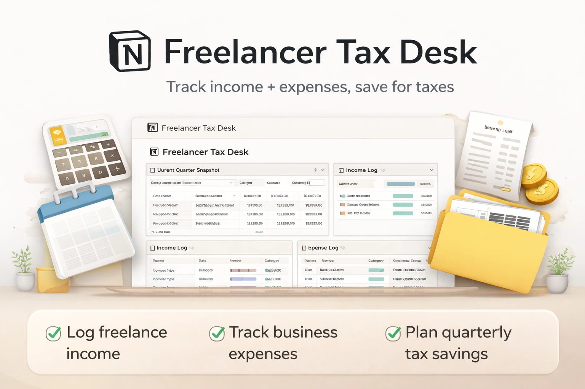

Freelance income
Track client income, payment notes, dates, and income categories in one workspace.
Freelancer Tax Desk is a Notion template for freelancers and contractors who want a cleaner way to track income, business expenses, deductions, quarterly savings, and basic finance admin.

Track client income, payment notes, dates, and income categories in one workspace.
Log expenses, categories, notes, and records you want to keep visible.
Keep estimated savings targets and admin review items easier to see.
Use it when payments are scattered across accounts, invoices, and notes.
Use it to keep business expenses and notes in one place for later review.
Use it to make finance admin visible before it piles up.
No. It is an organizational Notion tracker for freelance income, expenses, savings, and admin review.
Yes. You can adjust categories, statuses, views, and properties inside Notion.
Freelancers, contractors, creators, and solo service providers who want a simpler place to organize finance admin.
Use one Notion tracker for income, expenses, deduction notes, and quarterly savings.